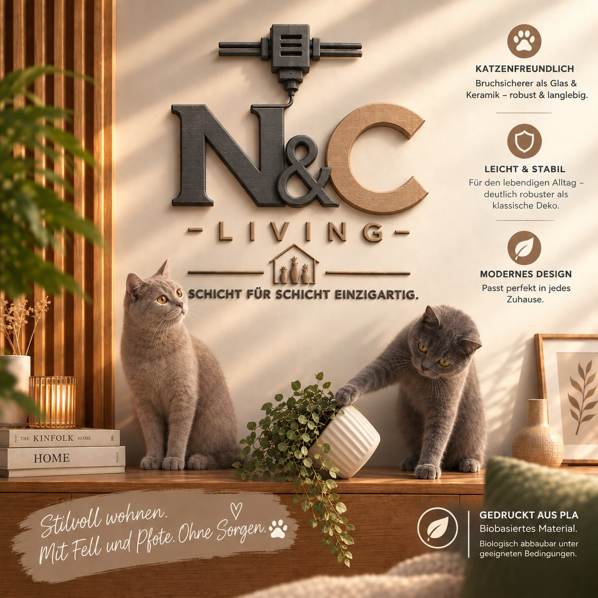

3D-Druck · Wohndeko aus Würselen
Deko, die auch Pfoten und Kinderhände übersteht.
N&C Living druckt Dekoartikel Schicht für Schicht aus robustem PLA – bruchsicherer als Glas und Keramik, für Zuhause mit Tieren und kleinen Entdeckern.

Sicherheit
Gemacht fürs echte Zuhause
Mit neugierigen Pfoten und kleinen Händen ganz in der Nähe.
Katzen- & hundefreundlich
Bruchsicherer als Glas oder Keramik. Ein Stupser von der Pfote, ein Sprung auf die Kommode – unsere Deko übersteht den Alltag mit Tieren deutlich robuster als klassische Deko.
Mit Bedacht für Familien
Unsere Deko ist kein Spielzeug und für die Wand oder den Sims gedacht – nicht für Kinderhände. Wir hängen alles ohne lange Schnüre auf und empfehlen, Stücke außerhalb der Reichweite von Kleinkindern anzubringen. So bleibt Schönes auch sicher.
Material & Qualität
Warum N&C Living
Vier Gründe, die im Alltag zählen.
Katzenfreundlich
Bruchsicherer als Glas und Keramik: robust und langlebig.
Leicht & stabil
Für den lebendigen Alltag, deutlich robuster als klassische Deko.
Modernes Design
Passt in jedes Zuhause.
Gedruckt aus PLA
Biobasiertes Material, biologisch abbaubar unter geeigneten Bedingungen.
Unsere Geschichte
Deko, die ihr Zuhause mag
N&C Living fertigt Dekoartikel im 3D-Druck: Herzen, Blumen, Schmetterlinge und Weihnachtsbäume. Jedes Stück entsteht Schicht für Schicht in Würselen und wird von Hand geprüft und verpackt, bevor es zu dir nach Hause reist.
Sortiment
Unsere Produkte
Ein Klick auf ein Foto vergrößert es.
Herstellung
So entsteht ein Stück
Vier Schritte, Schicht für Schicht zu einem Unikat.
Entwurf
Form und Farbe entstehen am Rechner und werden am Modell getestet, bis alles passt.
Druck
Der Drucker trägt das Material Schicht für Schicht auf, bis das Objekt entsteht.
Finish
Wir entfernen Stützen, verbinden die Teile und prüfen jedes Stück von Hand.
Versand
Sicher verpackt geht dein Unikat auf die Reise zu dir nach Hause.
Pflegehinweise
Pflege & Sicherheit
Damit du lange Freude hast. Die vollständigen Hinweise liegen jeder Bestellung bei.
Kein Spielzeug
- Nur zur Dekoration verwenden.
- Außerhalb der Reichweite von Säuglingen und Kleinkindern aufhängen.
Hitze & Flammen
- Verformung ab ca. 50 °C.
- Keine echten Kerzen, nur LED-Kerzen.
- Vor starker Sonne und Heizquellen schützen.
Gefäße & Schalen
- Nicht wasserdicht: nur für Trockenblumen oder Kunstpflanzen.
- Nicht lebensmittelecht.
- Nur feucht abwischen.
Erhältlich bei
Hier kannst du kaufen
Unsere Artikel gibt es auf den bekannten Plattformen.
Kontakt
Frag uns direkt
Du suchst ein Geschenk oder eine Sonderanfertigung? Schreib uns einfach.
N&C Living · Lukas Pieles · Grüner Weg 23 · 52146 Würselen